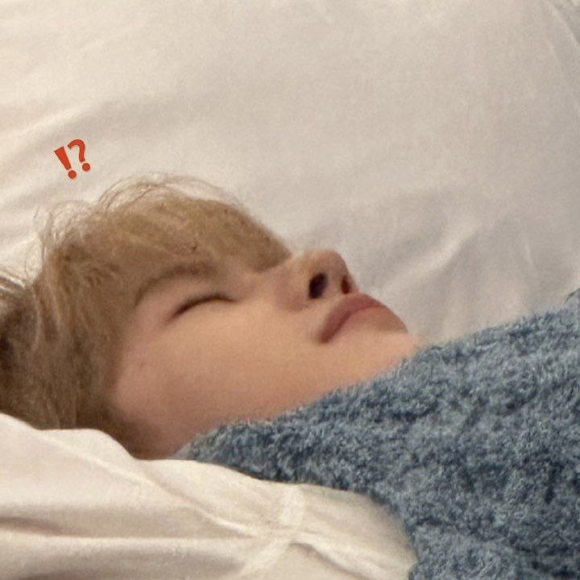

Meet our team
Owner
Image credit: Seventeen Weverse
This site owner wakes up multiple times a night and is awoken every morning to the screaming of a bird right outside their window. As someone who suffers from extreme daytime sleepiness, they've had enough and must do something to put an end to the drowsiness that frequently overtakes parts of their lives. They started this website as they found some things made improvements, and would love to share it with others that suffer the same way.
Writer

Image credit: @ZB1_official
Matthew Seok is Canadian and an extremely light sleeper. As someone with a lot of roomates, he knows how to sleep in any conditions. He became incredibly interested in how to sleep under any conditions in order to not let his home situation affect his outside life and work. As a busy man, he knows the importance of being well-rested and alert. Matthew studies English at SNU and writes for Dreamcatcher as a way to improve his writing with our editor to help him out.
Editor

Image credit: BOYNEXTDOOR Weverse
Riwoo Lee is extremely talented at sleeping and even better at speed-writing and editing. He started this project to help others sleep as well as he does, hoping that everyone can get sleep as well as he does. Riwoo started editing websites in 2020 as a side-project during quarantine, and quickly burnt out as he was taking on projects that didn't interest him. As a frequent napper and a great sleeper, this piqued his interest, and he gladly edits for Dreamcatcher in between his three jobs.
Our History
We've come so far in helping both each other and all of you in your journey to get better sleep. This isn't the end, we'll always be pushing out great content for you.